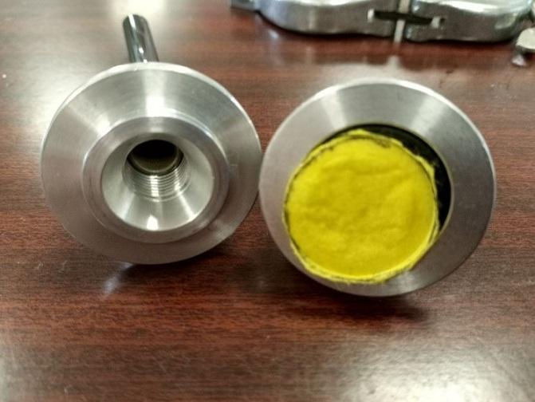
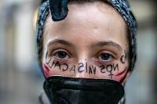

Las mascarillas caseras no son efectivas para protegerse del coronavirus, confirma un estudio de la UGR
ugrdivulga
Investigadores de la Universidad de Granada (UGR) y la Universidad de Barcelona (UB) han puesto a punto un nuevo sistema, diseñado por el Consejo Superior de Investigaciones Científicas (CSIC), para determinar la eficiencia de filtrado de distintos materiales ante partículas de 300 nanómetros (nm), como las del coronavirus, que puedan emplearse en mascarillas de protección.
Los investigadores advierten de que ninguno de los materiales caseros empleados para confeccionar mascarillas (bayetas, gamuzas atrapapolvo, telas de poliéster o gorros quirúrgicos de celulosa) filtra realmente las partículas de 300 nm, por lo que no son efectivos para protegerse frente al coronavirus, como sí lo son las mascarillas FPP3, HME y quirúrgicas analizadas.
El SARS-CoV-2, virus que provoca la enfermedad Covid-19, se transporta por vía aérea formando parte de partículas de diversos tamaños, como gotas y aerosoles y podrían permanecer en suspensión durante horas, o incluso días, explica la UGR.Diversos estudios muestran que estas partículas que se emiten al respirar, vocalizar, toser, estornudar y respirar son inicialmente similares, pero al emitirse al aire se hacen más pequeñas cuando se evapora el agua que contienen.Las partículas gruesas tienden a depositarse con rapidez, pero las partículas más finas pueden permanecer en suspensión.
Dada la situación de emergencia provocada por el SARS-COV-2, actualmente todavía existe escasez de mascarillas tanto quirúrgicas como antipartículas de grado P1, P2, N95, y P3.Ante las dificultades de fabricación para atender la gran demanda de material homologado, y en ausencia de la capacidad de realización de todos los ensayos normalizados de material alternativo, los investigadores de la UGR y el CSIC han propuesto un nuevo sistema para determinar la capacidad de filtración de materiales que puede servir en la actual situación de emergencia.
El sistema, que ha diseñado el CSIC y replicado el Grupo de Física de la Atmósfera de la UGR en el Instituto Interuniversiario de Investigación del Sistema Tierra en Andalucía, IISTA, permite la determinación de la capacidad filtrante de materiales y tejidos, candidatos para su uso en la fabricación de mascarillas y dispositivos de protección respiratoria para su utilización en la situación de emergencia por Covid-19.
El sistema se basa en la generación de aerosoles, selección de las partículas de 300 nm, y determinación de la concentración de partículas generada antes y después de pasar por el material bajo estudio.
En este trabajo, los científicos analizaron diversos materiales caseros que mucha gente está utilizando en las últimas semanas para elaborar mascarillas caseras, como bayetas, gamuzas atrapapolvo, telas de poliéster o gorros quirúrgicos de celulosa como los que se emplean en los quirófanos.También sometieron a su test de filtrado mascarillas FPP3, HME y quirúrgicas.
El informe, disponible online, presenta los primeros resultados de eficiencia de filtración de aerosoles de 300 nm de distintos filtros, tanto homologados como posibles alternativas factibles en situación de emergencia.
Los resultados demostraron que ninguno de estos materiales caseros filtra realmente las partículas de 300 nm, por lo que no son efectivas para protegerse frente al coronavirus, como sí lo son las mascarillas FPP3, HME y quirúrgicas analizadas.
Posted On: 2020-05-07T00:00:00


Content Date: 2020-05-07
Download Date: 2021-04-21
Document ID: L0C04AJF8